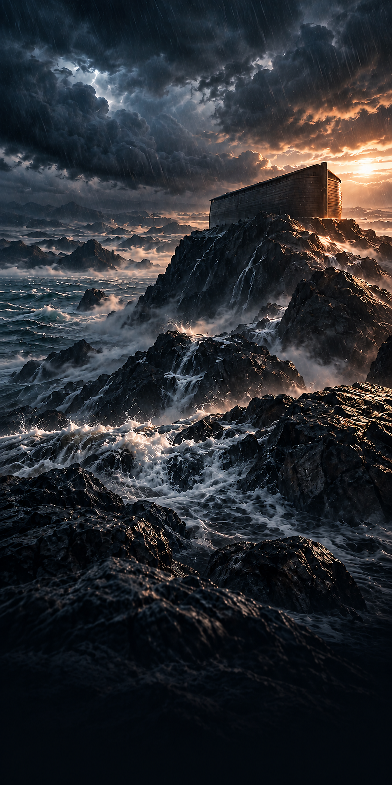
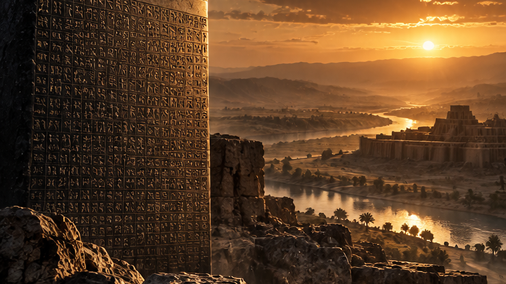
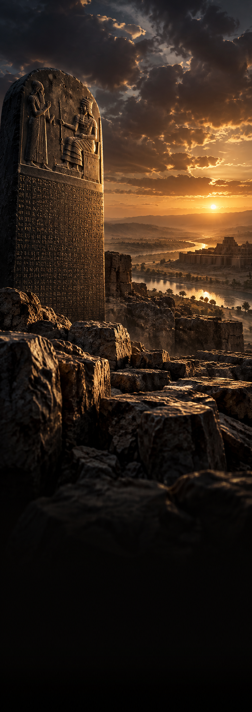

Jarrett Michael
Photography courtesy of contributors on Unsplash.Roberto CatarinicchiaDrew CoffmanTaylor FloweVladimir KramerVolodymyr LeushParastoo MalekiZoltan TasiDrew Walker
The Parallel Exhibit
Each comparison places a biblical text beside a related writing from the ancient Near East. Read them together to notice what they share, and where the biblical writers begin to say something distinct.
Enūma Eliš & Genesis 1

Gilgamesh XI & Genesis 6–9


Hammurabi & Exodus 21–23